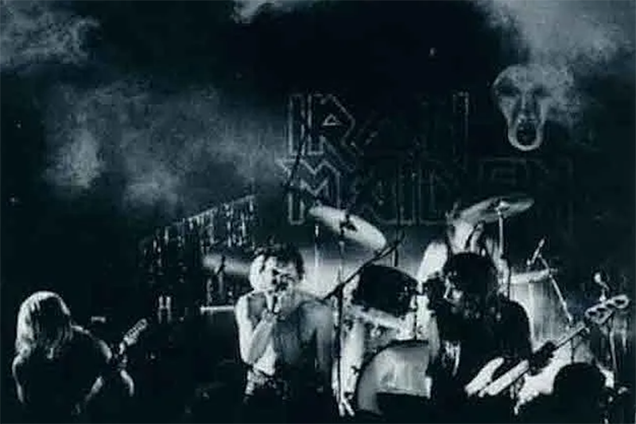
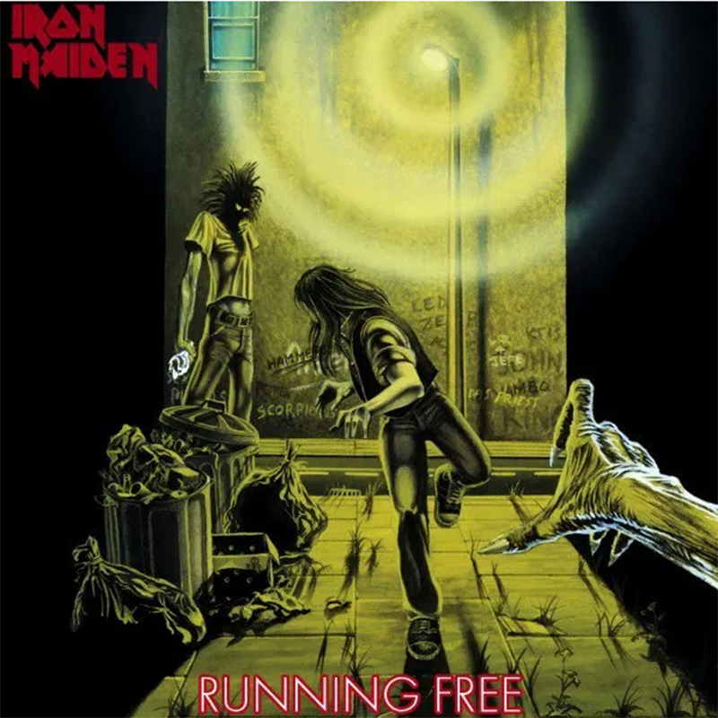
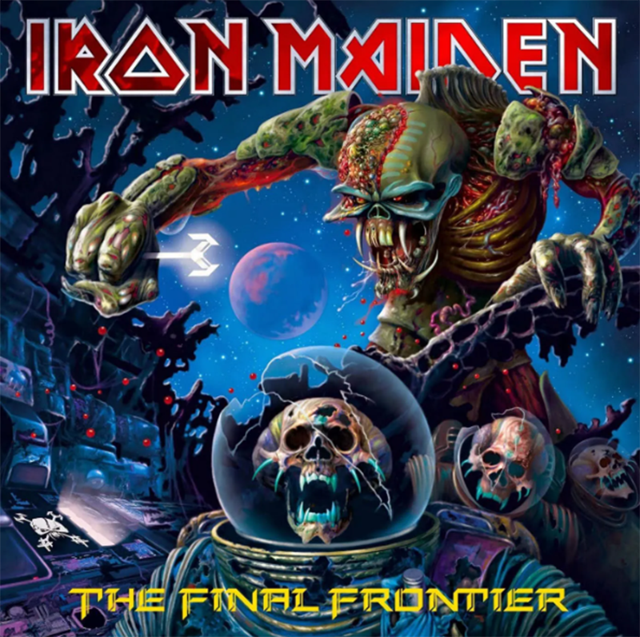
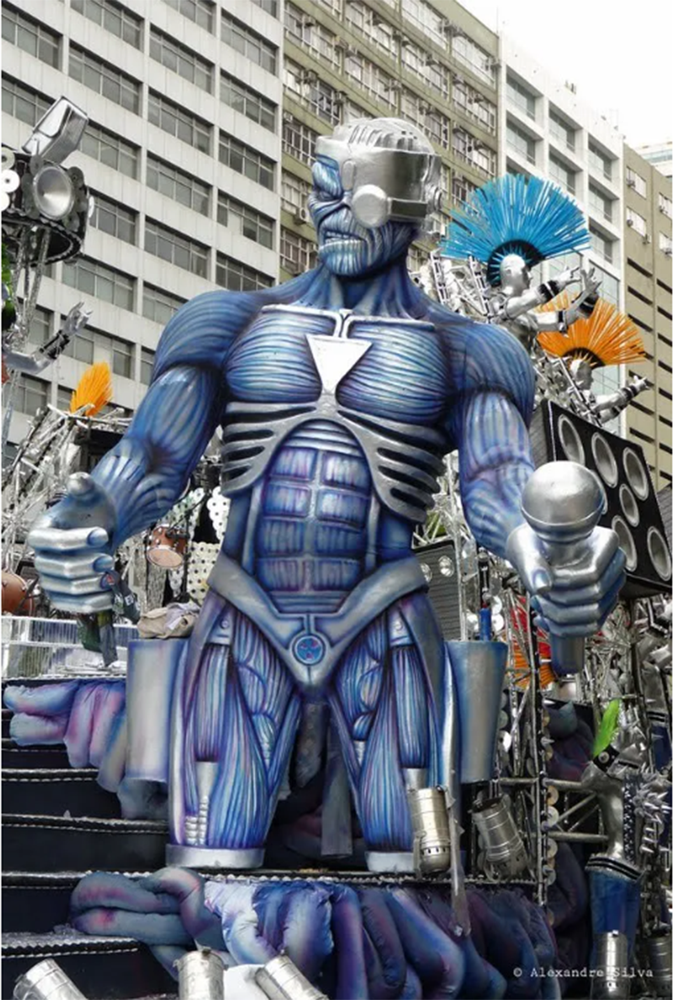

- A origem 'cabeçuda'
- Da guerra para o punk
- O nome veio de uma piada
- Nicko já foi Eddie
- Pai sem filho
- Quando Eddie não esteve com o Maiden
- Eddie, o terror das crianças alemãs
- Eddie é BR
- Eddie é carnavalesco
- Eddie é vascaíno
Origem do Eddie
10 curiosidades sobre Eddie, o lendário mascote do Iron Maiden Eddie the Head, Edward the Head, Edward the Great, Evil Eddie, ou, simplesmente, Eddie. O lendário mascote do Iron Maiden atende por diversas identidades e apareceu em vários visuais ao longo dos anos, mas, independente de nomes ou trajes, ele sempre foi uma figura constante
Eddie the Head, Edward the Head, Edward the Great, Evil Eddie, ou, simplesmente, Eddie. O lendário mascote do Iron Maiden atende por diversas identidades e apareceu em vários visuais ao longo dos anos, mas, independente de nomes ou trajes, ele sempre foi uma figura constante na carreira do Maiden.
Nesse post, vamos apresentar 10 curiosidades sobre o mascote mais popular do heavy metal - e, quem sabe, do rock como um todo. Coloque seu disco favorito do Iron Maiden para rolar e vamos nessa!
1) A origem 'cabeçuda'
Eddie foi criado pelo desenhista Derek Riggs, mas ele não surgiu do nada. O mascote foi feito a partir de uma ideia de Dave Beasly, cenógrafo amigo do Iron Maiden.Esse cara construiu uma cabeça gigante de sucata para ficar no canto dos shows do Iron Maiden. Ou seja: o 'protótipo de Eddie' era só um grande cabeção sem nome.Veja uma foto de show com o protótipo:
Origem do Eddie
Derek Riggs foi contratado para fazer a capa do single 'Running Free' e fez Eddie, um zumbi maligno e bem magrelo, inspirado no cabeção dos palcos. O single foi lançado em 8 de fevereiro de 1980, data do 'nascimento' de Eddie. Veja a capa do single 'Running Free':
capa do single Running Free
2) Da guerra para o punk?
A relação entre Eddie e a guerra sempre foi muito próxima. E essa relação apareceu logo em sua origem, pois ele foi criado a partir de uma fotografia de guerra. Derek Riggs já falou sobre o assunto no livro 'Heavy metal', de Ian Christe. E ainda disse que Eddie foi criado para a capa de um disco punk.
“Tentei representar as ideia do punk visualmente, mas não conseguia vendê-la para bandas do gênero, pois eles ficavam com medo”, completa.
Imagem que serviu de inspiração para criar o Eddie
O desenhista passou cerca de um ano e meio batendo na porta de gravadoras com seu portfólio, mas sempre era recusado por diretores de arte pois seu desenho era pouco usual. Um dia, o Iron Maiden pediu uma reunião com Riggs. “Considerei não levar aquele desenho, pois ele sempre me prejudicava. Porém, pensei ‘bom, vamos lá’ e enfiei ele dentro da pasta”, explicou.
3) O nome veio de uma piada
O nome Eddie The Head teve duas origens. 'Eddie' veio do sotaque britânico, onde a palavra 'head' soava como 'ead', que acabou virando 'Eddie'. Já o nome completo, Eddie The Head, surgiu de uma antiga piada inglesa. E o guitarrista Dave Murray já contou essa piada:
"Eddie nasceu sem corpo, braços e pernas. Só tinha a cabeça. Mas seus pais o amavam muito. No seu 5° aniversário, eles foram a um médico que lhes disse que poderia dar um corpo ao garoto. Animados, os pais voltaram para casa e falaram para Eddie: 'Nós temos uma surpresa para você. É o melhor presente do mundo!'. E Eddie responde: 'Ah, não, a porra de outro boné!'
4) Nicko já foi Eddie
A estreia do baterista Nicko McBrain com o Iron Maiden foi como Eddie! Em 1982, Nicko McBrain tocou com o Iron Maiden no programa 'Rock Follies', da Bélgica. Ele substituiu temporariamente o músico que era dono da posição, CliveBurr, que estava com um problema de saúde. Para não dar pistas de que era outro baterista no comando, Nicko McBrain escondeu o rosto com uma máscara de Eddie. E tocou com a cara do mascote!
5) Pai sem filho
O primeiro Eddie que não foi desenhado por Derek Riggs na discografia do Iron Maiden é o que está na capa do álbum 'Fear Of The Dark', de 1992. A arte foi preparada por Melvyn Grant. Depois disso, a única capa feita por Derek Riggs foi a do álbum 'Brave New World',de 2000, que selou o retorno do vocalista Bruce Dickinson e do guitarrista Adrian Smith à banda. As demais imagens foram feitas por outros artistas, como Melvyn Grant e Hugh Syme.
6) Quando Eddie não esteve com o Maiden
O Eddie só não esteve presente em uma capa da discografia de estúdio do Iron Maiden - e com certa controvérsia, diga-se de passagem. A ausência é da arte que estampa o álbum 'The Final Frontier', de 2010
Nesse caso, quem revelou a ausência de Eddie foi o artista Melvyn Grant, que fez a capa. Ele disse que tentou fazer uma versão própria do mascote nessa capa, já que não gostava tanto do estilo de desenho usado por Derek Riggs. Só que o Iron Maiden acabou proibindo que Melvyn Grant saísse demais do estilo original. "Não é Eddie, propriamente dito, na capa de 'The Final Frontier'. Não vou dizer mais nada, porque não sei o que o Iron Maiden planeja, então não vou estragar nenhuma surpresa. Mas direi que ele, na verdade, é um alien", contou o artista, em 2010.
capa do álbum 'The Final Frontier'
7) Eddie, o terror das crianças alemãs
Por incrível que pareça, o desenho de Eddie na capa do álbum 'The Book Of Souls', de 2015, causou controvérsia em um outdoor colocado em Berlim, na Alemanha. A propaganda, colocada para divulgar o disco foi tampada por um pano colocado por um morador da região. E o pano dizia: "Existem várias crianças do jardim de infância e primeiros anos de escola nessa área. Esse pôster não deve estar aqui".

8) Eddie é BR!
A gente sabe que os caras do Iron Maiden adoram o Brasil e também curtem futebol. Mas você sabia que eles já juntaram tudo isso em uma ilustração? Antes de sua turnê pelo Brasil, em março de 2016, o Iron Maiden divulgou uma arte no Instagram que mostrava o Eddie batendo uma bolinha em uma praia com a camisa da seleção brasileira. Será que dá para sair vivo de uma dividida contra Edward the Head?

9) Eddie é carnavalesco
O Eddie não é só grande fã do Brasil, como também já esteve no Carnaval, a festa mais famosa do país. Duas esculturas do mascote foram feitas pela Mocidade Independente de Padre Miguel para o desfile das escolas de samba do Rio de Janeiro, em 2013. O enredo contou a história do Rock In Rio, festival que tem enorme relação com com o Maiden.
Eddie no Carnaval do Rio
10) Eddie é vascaíno?
O Iron Maiden adorou saber que o Eddie foi adotado como mascote da torcida organizada Força Jovem Vasco, do clube de futebol Vasco da Gama. O uso do mascote foi aprovado pelos caras do Maiden, que chegaram a ir ao jogo final do Campeonato Brasileiro de 2000, onde o Vasco levou o caneco depois de vencer o São Caetano.
A Roquenrou fez uma camiseta para homenagear essa união de futebol e Rock. Confira essa e outras camisetas do Maiden aqui.